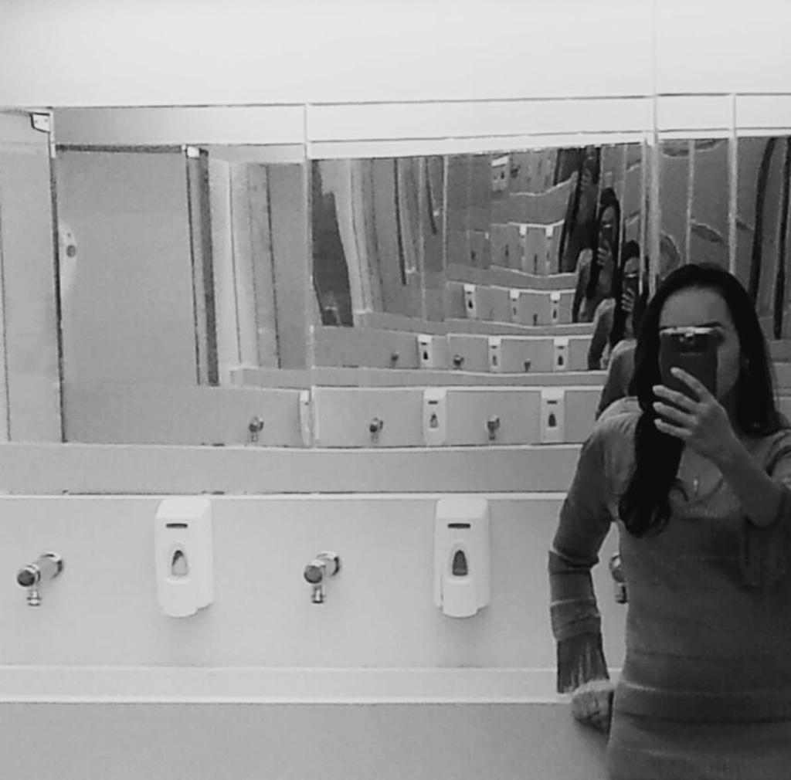

CADEIAS INTERNAS

fonte imagem: https://polarisproject.org/blog/2020/03/the-effect-of-covid-19-on-human-trafficking/
Poesia & Prosa

fonte imagem: https://polarisproject.org/blog/2020/03/the-effect-of-covid-19-on-human-trafficking/